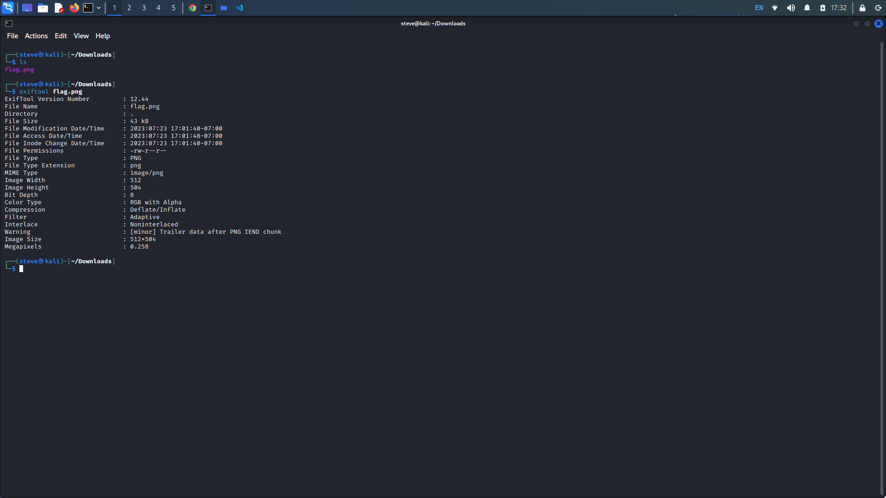
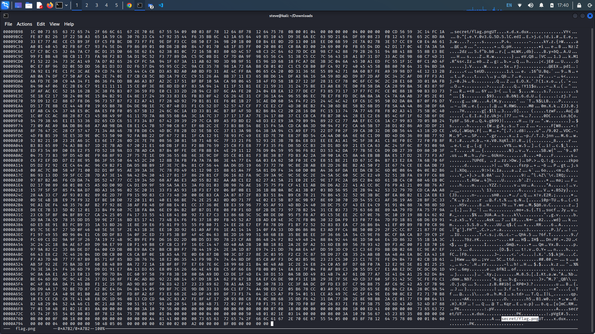
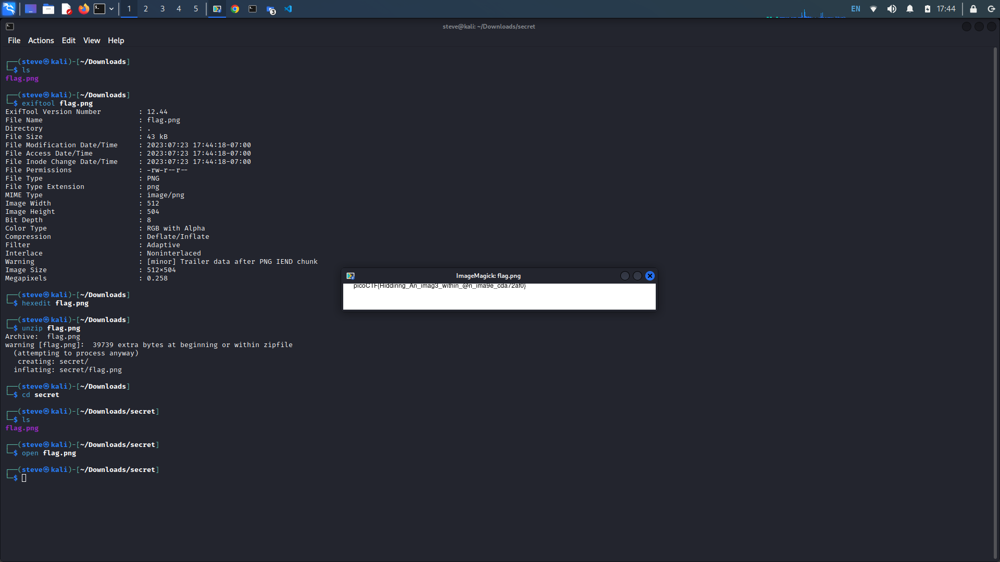

hideme
Description: Every file gets a flag.The SOC analyst saw one image been sent back and forth
between two people. They decided to investigate and found out that there was more than what meets the
eye here.
Writeup: Run exiftool on the flag.png file to find out more information about the file. We
get a warning that there is trailer data after the PNG's IEND chunk. The IEND chunk should be the last
chunk in a PNG file as it marks the end of the PNG datastream.

We want to examine the end of the file so press the ">" key to go to the very bottom. Here we see mention of a "secret" directory that contains a flag.png file.

It seems that there are hidden files within our flag.png file. Unzipping the file reveals the secret directory which includes our flag in a png file.
